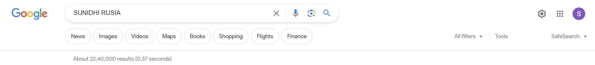
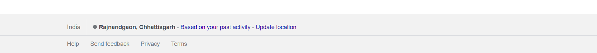

YouHaveReachedSunidhi.com
EXPERIENCE
Web Development Intern
OmniScience Capital Advisors Pvt. Ltd.
As a Web Development Intern at OmniScience Capital Advisors Pvt. Ltd., I had the opportunity to contribute to a web development project focused
on creating a pseudo
website using WordPress. During my time with the company, I gained hands-on experience and practical knowledge in various
aspects of web development.
https://sunidhi_projects.in
PROJECTS
Python Projects: Password Generator: Developed a password generator using Python, which generates secure and random passwords based on user-defined
criteria.
Rock Paper Scissors Game: Created a single-player game using
Python that allows users to play against the computer in a classic game of rock,
paper, scissors. Web Development Projects:
HTML, CSS, and JS Websites: Designed and developed multiple websites using HTML, CSS, and JavaScript. Implemented interactive features and
responsive layouts to enhance the user experience.
Golang Web application Weather Tracker: Designed and implemented a weather tracker application that allows users to track the weather and temperature of various cities.
Utilized APIs to fetch real-time weather data and displayed
it in a user-friendly manner.
sunidhi's_Edcation.co.in
EDUCATION
I am a motivated B.Tech student pursuing my 3rd year at Shri Shankaracharya Technical Campus. With a strong academic background, including
93% in HSC (PCM) and 90% in SSC, I am passionate about technology and have completed various Python
and seeking opportunities in the field
of technology and engineering.
http://skills/mine.com
SKILLS
Soft Skills: Communication, Time Management, Listening, Problem Solving
Technical Skills: Python, C, Java, Golang, C++, MySQL, WordPress
Web Development: HTML, CSS, JavaScript, ReactJS
Additional Skills: Data Structures and
Algorithms, Operating Systems, SQL Server
